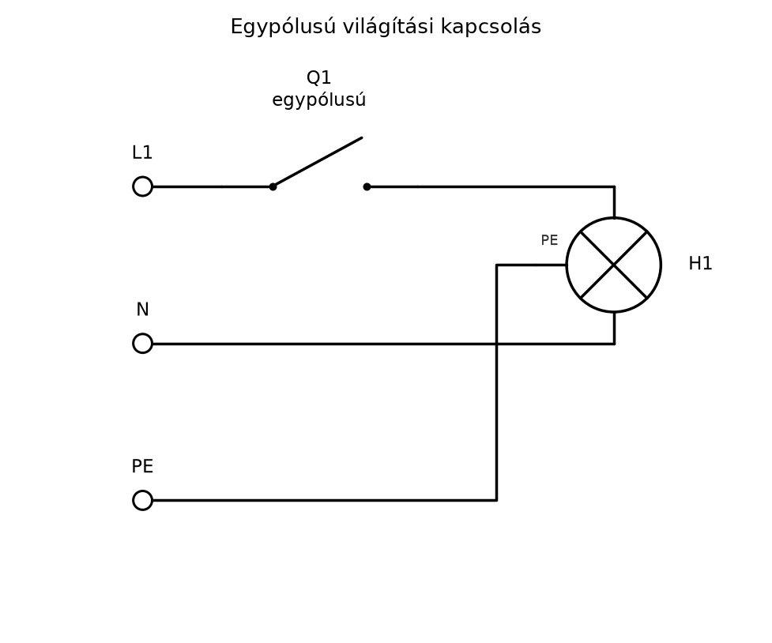

Egy lakásfelújításkor az egyik leggyakoribb kérés, hogy a lámpát ne csak egy helyről, hanem két vagy három pontról is lehessen kapcsolni: hálószobában az ajtó mellől és az ágy felől, hosszú folyosón vagy lépcsőházban több szintről. Egyszerű egypólusú kapcsolóval ez lehetetlen. Két váltókapcsolóval két pontról kapcsolható a lámpa, a közéjük iktatott keresztkapcsolóval pedig három vagy több pontról. Ebben az alfejezetben lépésről lépésre megépítjük ezeket a kapcsolásokat tanműhelyi környezetben, megtanuljuk bekötésüket, ellenőrzésüket, és begyakoroljuk a jellegzetes hibák felismerését.
Továbbvitt eredmény. Az itt megszerzett kapcsolási, vezetékezési és ellenőrzési rutin közvetlenül felhasználásra kerül a Lakáselosztó építése és bekötése alfejezetben, ahol a világítási áramköröket az elosztó túláramvédelméhez és áram-védőkapcsolójához kell csatlakoztatni, és ahol a fázis–nulla–védővezető szétválasztás már az elosztóban kezdődik.
Az alábbi kapcsolási rajz a legegyszerűbb világítási áramkört, az egypólusú kapcsolást mutatja: a fázisvezető (L1) a kapcsolón keresztül jut a lámpához, a nulla (N) közvetlenül a lámpa másik kivezetésére csatlakozik, a védővezető (PE) pedig a lámpa fém testéhez, ha van.

A rajzon a kapcsoló (Q1) megszakítja a fázist, tehát amikor nyitva van, a lámpa fázisoldala le van választva. A nulla közvetlenül a lámpára megy, így a lámpa foglalatában a fázis mindig a középső érintkezőre, a nulla a menetes részre csatlakozik – ez biztonsági előírás, hogy kikapcsolt állapotban a foglalat külső, megfogható része ne legyen fázis alatt.
Definíció. Az egypólusú kapcsoló egyetlen érintkezőpárt tartalmaz, és egy helyről tudja a lámpa áramkörét zárni vagy szakítani.
Definíció. A váltókapcsoló (idegen szóval SPDT, single-pole double-throw) egy közös bemenettel és két kimenettel rendelkezik. Állástól függően a közös pont az egyik vagy a másik kimenetre csatlakozik. Két váltókapcsolóval két pontról lehet egy lámpát kapcsolni.
Definíció. A keresztkapcsoló (DPDT, keresztbe kötött két váltó) két bemeneti és két kimeneti csatlakozással rendelkezik. Alaphelyzetben a bemeneteket egyenesen köti a kimenetekkel (1→1’, 2→2’), kapcsolt állapotban pedig keresztben (1→2’, 2→1’). Keresztkapcsolót a váltókapcsolók közé kell bekötni, így három vagy több kapcsolási pont valósítható meg.
Megjegyzés (betűjelek). Ebben az alfejezetben a kapcsolókat az egyszerűség kedvéért Q1–Q3-mal, a lámpát H1-gyel jelöljük. Az MSZ EN IEC 81346-2 szerinti betűjelezés (ellenőrizendő: aktuális kiadás) és a könyv rajzjel-függeléke a világítási kapcsolóra az S, a világítótestre az E betűjelet ajánlja; a Q az erősáramú kapcsolókészülék (főkapcsoló, kismegszakító) jele. Valós terven a függelék szerinti jelölést használd.
Szabály. A fázist mindig a kapcsoló szakítja meg, a nulla közvetlenül a fogyasztóhoz (lámpához) megy. Ez biztosítja, hogy kikapcsolt állapotban a lámpa foglalata ne legyen feszültség alatt. A védővezetőt minden érinthető fémrészhez csatlakoztatni kell, de a kapcsolási áramkörben nem játszik szerepet.
Szabály (színjelölés). A magyarországi és európai gyakorlatban a fázisvezető barna (L1), fekete (L2) vagy szürke (L3), a nulla világoskék (N), a védővezető zöld-sárga (PE). A váltókapcsolók közötti ún. „váltóvezetékek” is fázisvezetőnek minősülnek, ezért jellemzően barna vagy más, nem kék/zöld-sárga színűek.
Szabály (bekötési logika váltókapcsolásnál). Két váltókapcsoló esetén a fázis az első váltókapcsoló közös pontjára (általában a kapcsoló hátoldalán egyértelműen jelölt csatlakozóra, pl. L vagy COM) kerül. A második váltókapcsoló közös pontja a lámpa fázisoldali kivezetésére csatlakozik. A két váltókapcsoló kimenő kapcsait (az ún. 1-es és 2-es pontokat) páronként összekötjük két vezetékkel. Így a lámpa akkor világít, ha a két kapcsoló állása megegyezik (mindkettő az 1-es vagy mindkettő a 2-es oldalon áll), és nem világít, ha ellentétes állásban vannak.
Szabály (bekötési logika keresztkapcsolásnál). A keresztkapcsoló a két váltókapcsoló közötti két összekötő vezeték közé kerül. Az első váltókapcsoló kimenő pontjai a keresztkapcsoló bemeneteire, a keresztkapcsoló kimenetei pedig a második váltókapcsoló kimenő pontjaira csatlakoznak. Minden egyes keresztkapcsoló beiktatásával a kapcsolási pontok száma eggyel növelhető.
Adott: tanműhelyi panel, egypólusú kapcsoló, lámpafoglalat, 12 V-os vagy 230 V-os feszültségforrás (felügyelt környezetben), 1,5 mm²-es vezetékek.
Keresett: a kapcsolás bekötési lépései.
Megoldás: 1. Kösd a fázist (barna) a kapcsoló egyik kapcsára. 2. A kapcsoló másik kapcsáról induló barna vezetéket vezesd a lámpa középső érintkezőjéhez. 3. Kösd a nullát (kék) közvetlenül a lámpa menetes érintkezőjéhez. 4. Ha a lámpa testén védőérintkező van, kösd a zöld-sárga védővezetőt. 5. Ellenőrizd multiméterrel, feszültségmentesen, izzó nélkül: a fázis bemeneti kapcsa (L) és a foglalat középső érintkezője között a kapcsoló nyitott állásában ne legyen folytonosság, zárt állásában legyen; a nulla bemeneti kapcsa és a foglalat menetes része között mindig legyen. Ne az L és az N kapocs között, behelyezett izzóval mérj és ne várj nyitott állást: a lámpa izzószála ilyenkor a mérőkörben van, és a kapcsolóállástól függetlenül kis ellenállást mutat.
Adott: két váltókapcsoló (Q1, Q2), egy lámpa, fázis- és nullavezető.
A kapcsolási vázlat szöveges leírása: L1 → Q1 közös pont → Q1 1-es és 2-es pontjai → két vezeték Q2 1-es és 2-es pontjaihoz → Q2 közös pont → lámpa fázisoldala → lámpa másik oldala → N.
Bekötés lépései: 1. Kösd a fázist a Q1 közös pontjára (általában a kapcsoló hátoldalán más színű csavar vagy “L” jelölés). 2. A Q1 másik két kapcsáról (1, 2) induljon két azonos színű (pl. barna) vezeték. 3. Kösd ezt a két vezetéket a Q2 ugyanolyan sorszámú kapcsaira (1 az 1-hez, 2 a 2-höz). Fontos: a sorszám szerinti bekötés (1→1, 2→2) a dokumentáció áttekinthetőségét szolgálja. Ha a két váltóvezetéket felcseréled, a kapcsolás ugyanúgy működik – bármelyik kapcsoló átbillentése átváltja a lámpát –, csak a billentyűállás és a lámpaállapot összerendelése fordul meg (a lámpa az ellentétes állásokban ég). Ez tehát nem hiba; valódi hiba a közös pont vagy a nulla eltévesztése. 4. A Q2 közös pontjáról vezesd a fázist a lámpa középső érintkezőjére. 5. A nullát kösd a lámpa másik kivezetésére. 6. Kapcsolási táblázat: ha mindkét kapcsoló az 1-es állásban van, a lámpa világít; ha mindkettő a 2-esben, szintén világít; ha az egyik 1-es, a másik 2-es, nem világít. A két kapcsoló bármelyikének átkapcsolása megváltoztatja a lámpa állapotát.
Adott: két váltókapcsoló (Q1, Q3), egy keresztkapcsoló (Q2), lámpa.
Bekötés vázlata: - Q1 (váltó) közös pontjára L1. - Q1 1-es és 2-es pontjait kösd a Q2 keresztkapcsoló bemeneteire (1, 2). - Q2 kimeneteit (1′, 2′) kösd Q3 (váltó) 1-es és 2-es pontjaira. (Gyártói jelölés esetén a kapocsfeliratot a katalógus szerint azonosítsd; az A1/A2 jelölés a tekercs kapcsait jelöli, ezért itt nem használjuk.) - Q3 közös pontjáról a lámpára, a lámpa másik oldalára N.
Működési logika: A keresztkapcsoló egy állásban egyenesen (1→1′, 2→2′), a másik állásban keresztben (1→2′, 2→1′) köti a vezetékeket. Így a két váltókapcsoló közötti útvonal kétféleképpen zárható. Három kapcsoló esetén a lámpa állapota bármelyik kapcsoló átbillentésével megváltozik.
Az ábra (a) része a 2. példa váltókapcsolását mutatja Q1 = 1, Q2 = 1 állásban: a fázis Q1 közös pontjáról az 1-es váltóvezetéken át Q2 közös pontjára, onnan a lámpára jut, a lámpa ég. A (b) rész a 3. példa keresztkapcsolását mutatja Q1 = 1, Q2 egyenes, Q3 = 1 állásban. Mellettük a 4, illetve 8 soros igazságtábla áll. A HTML-kiadásban a kapcsolókra kattintva átbillennek, az áramút kiemelődik, a táblázat aktuális sora kijelölődik; a „Váltóvezetékek felcserélése” gomb megmutatja, hogy a felcserélés után a kapcsolás továbbra is működik, csak az igazságtábla fordul meg.
Szabvány. A világítási áramkörök kialakítására és védelmére az MSZ HD 60364 sorozat vonatkozik (különösen a vezetékek szerelési módja, terhelhetősége és a feszültségmentesítés feltételei). A kapcsolók és lámpák rajzjeleit az MSZ EN 60617 szabványsorozat rögzíti. A gyakorlati bekötés során a vezeték keresztmetszetét az áramkör névleges áramához és a védelmi készülékhez kell illeszteni; a tanműhelyi gyakorlatban 1,5 mm²-es rézvezeték és 10 A-es kismegszakító használata jellemző. (ellenőrizendő: aktuális szabványkiadás és a tanműhelyi előírások).
Valós eset. Egy felújított lakásban a tulajdonos jelezte, hogy a hálószobai lámpa csak az ágy felőli váltókapcsoló egyetlen állásában ég, és az ajtó felőli kapcsolóról sem lehet rendesen vezérelni. A szerelő megmérte a kapcsolók bekötését (feszültségmentesen): az ajtó melletti kapcsolónál a fázis rendben a közös pontra volt kötve, de az ágy melletti kapcsolónál a közös pont kapcsára az egyik váltóvezeték, a lámpához vezető vezeték pedig az egyik váltókapcsra került. Emiatt a lámpa csak egyetlen álláskombinációban kapott fázist. A javítás a két vezeték megcserélése volt a kapcsoló hátoldalán. A tanulság: a váltókapcsoló közös pontját mindig a gyártó jelölése alapján azonosítjuk; a két váltóvezeték felcserélése ezzel szemben nem hiba, csak a lámpa és a billentyűállás összerendelését fordítja meg.
Cél: Tanműhelyi modellen megépíteni egy egypólusú, egy kétpontos váltó- és egy hárompontos keresztkapcsolást, majd feszültségmentes állapotban folytonosságméréssel, ezt követően felügyelt feszültség alatt működési próbával ellenőrizni.
Eszközök és anyagok:
Biztonsági korlát. A feladat tanműhelyi (törpefeszültségű) környezetre vagy jogosult oktató felügyeletére vonatkozik; hálózati feszültségen önállóan ne végezd. Hálózati feszültségű (230/400 V) munkát csak jogosult, arra képesített személy végezhet.
Az öt biztonsági szabály a feszültségmentesítéshez: 1. Lekapcsolás 2. Visszakapcsolás elleni biztosítás 3. Feszültségmentesség ellenőrzése 4. Földelés és rövidre zárás (ha indokolt) 5. Szomszédos, feszültség alatt álló részek lefedése
A gyakorlati bekötést kizárólag feszültségmentes állapotban végezzük, a feszültség alá helyezés előtt az oktató ellenőrzi a kapcsolást.
1. Előkészítés: Szereld fel a kapcsolókat és a lámpafoglalatot a panelre, rögzítsd a vezetékcsatornákat vagy használj szabadon vezetett vezetékeket.
2. Vezetékek előkészítése: Vágd méretre a szükséges vezetékeket, csupaszítsd a végeket 8-10 mm-en, és ha hajlékony vezetéket használsz, szerelj érvéghüvelyt.
3. Fázis bekötése: Kösd a barna fázist a Q1 (első váltókapcsoló) közös pontjára.
4. Váltóvezetékek: A Q1 1-es és 2-es kapcsairól induljon két barna (vagy más, nem kék/zöld-sárga) vezeték a Q2 (második váltókapcsoló) megfelelő 1-es és 2-es kapcsaira. Ügyelj a sorszámegyezésre: 1-es az 1-esbe, 2-es a 2-esbe.
5. Lámpa bekötése: A Q2 közös pontjáról barna vezetéket vezess a lámpa középső érintkezőjéhez. A kék nullát kösd a lámpa menetes részéhez, a zöld-sárga védővezetőt pedig a lámpa fém testéhez, ha van.
6. Folytonosságmérés (feszültségmentesen): Állítsd a multimétert folytonosságmérésre. Csavard ki az izzót (behelyezett izzóval az izzószál kis ellenállása miatt a mérés félrevezető). Mérj a fázisbemenet (a Q1 közös pontja) és a foglalat középső érintkezője (a Q2 közös pontja) között: azonos állásokban (1-1, 2-2) legyen folytonosság, ellentétesekben (1-2, 2-1) ne legyen. Külön mérd a nulla bemeneti kapcsa és a foglalat menetes része közötti folytonosságot is.
7. Ellenőrzés feszültség alatt (csak felügyelettel): Kapcsold rá a tanműhelyi feszültséget, majd működési próba: mindkét kapcsolót átkapcsolva a lámpának ki-be kell kapcsolnia, és bármelyik kapcsoló átváltása állapotváltozást kell, hogy okozzon.
8. Keresztkapcsolás bővítése: Ha keresztkapcsolást építesz, a két váltókapcsoló közé iktasd be a keresztkapcsolót. Ilyenkor a jelölés a 3. példa szerint módosul: Q1 az első váltó, Q2 a keresztkapcsoló, Q3 a második (lámpa felőli) váltó. Q1 1-es és 2-es vezetékei a Q2 bemeneteire (1, 2), Q2 kimenetei (1′, 2′) a Q3 1-es és 2-es pontjaira mennek; a lámpát a Q3 közös pontja táplálja.
9. Dokumentálás: Készíts kapcsolási rajzot, jelöld be a vezetékszíneket és a kapcsok sorszámát. A rajz legyen olvasható, és tartalmazza a felhasznált anyagok tételes listáját.
Ellenőrzési pontok:
Recept. Váltókapcsolás bekötése:
Hiba 1 – A váltókapcsoló közös pontjának
eltévesztése.
A szerelő a fázist az egyik váltóérintkezőre köti, a közös pontra pedig
a lámpa felé menő vezetéket teszi. Eredmény: a lámpa egyes
kapcsolóállásokban rosszul vagy egyáltalán nem működik. Helyes
gyakorlat: mindig a gyártó által jelölt közös pontot használni, és ezt
folytonosságméréssel ellenőrizni.
Hiba 2 – A nulla kapcsolóra kötése.
Ha a nullát kötik a kapcsolóra, a kapcsoló nem a fázist szakítja:
kikapcsolt lámpánál is feszültség alatt maradhat a lámpa fázisoldali
kivezetése, ami érintésvédelmi kockázat. Helyes: a bekötést rajz alapján
végezni, és feszültségmentesen folytonossággal ellenőrizni.
Megjegyzés. Ha a két váltóvezetéket (1 és 2) egyszerűen
felcserélik az egyik kapcsolónál, az nem hiba: a kapcsolás továbbra is
működik, csak a lámpa az ellentétes állásokban ég.
Hiba 3 – Keresztkapcsoló rossz bekötése.
A keresztkapcsoló bemeneteire és kimeneteire nem a megfelelő
váltóvezetékeket kötik, vagy a keresztkapcsolót a váltókapcsolók helyére
teszik. Eredmény: valamelyik kapcsoló (jellemzően maga a
keresztkapcsoló) hatástalanná válik, vagy a lámpa egyes kombinációkban
nem a várt módon vált. Ellenőrzés: a keresztkapcsoló kapcsai között
folytonosságméréssel mindkét állásban (1–1′ és 2–2′ egyenes állásban;
1–2′ és 2–1′ kereszt állásban). Helyes: a keresztkapcsoló mindig a két
váltó közé kerül, és a bekötésnél figyelni kell az egyenes-kereszt
állásokra.
Hiba 4 – Nulla és fázis felcserélése a
lámpánál.
Kikapcsolt állapotban a lámpa foglalatának menetes része fázis alatt
marad, ami érintésvédelmi szempontból veszélyes. Helyes: fázis a
kapcsolón át a középső érintkezőre, nulla a menetes részre.
(A válaszok a Megoldások elején találhatók.)
1. feladat (A). Fogalmazd meg röviden a különbséget egypólusú kapcsoló és váltókapcsoló között!
2. feladat (A). Rajzold le (szövegesen) a kétpontos váltókapcsolás bekötési vázlatát, a vezetékszíneket is jelölve.
3. feladat (B). Adott két váltókapcsoló, egy lámpa, 230 V-os hálózat. Írd le a bekötési lépések sorrendjét, és állapítsd meg, hogy a kapcsolók 1-1 és 1-2 álláskombinációinál a lámpa világít-e.
4. feladat (B). Egy keresztkapcsolóval bővített kapcsolásban hány vezeték csatlakozik a keresztkapcsolóhoz, és milyen szerepet töltenek be?
5. feladat (C). Hibás kapcsolás elemzése: a lámpa a négy álláskombináció (Q1, Q2) közül csak egyben, az (1, 1) állásban ég, a másik háromban sötét. Mi lehet a bekötési hiba (a közös pont eltévesztése Q2-nél)? Készíts állástáblát, és vázold a javítást! Külön döntsd el: hibának számít-e, ha a lámpa az ellentétes kapcsolóállásokban ég, de mindkét kapcsolóról átváltható?
6. feladat (D). Építsd meg a keresztkapcsolást a gyakorlati útmutató szerint. Feszültségmentes állapotban végezz folytonosságmérést. Sorold fel, mely pontok között mérsz, és milyen eredményt vársz a kapcsolók különböző állásainál!
Önellenőrzés – válaszok
1. feladat megoldása. Az egypólusú kapcsoló egyetlen áramkört szakít meg, és csak egy pontról kapcsol. A váltókapcsoló egy közös bemenetet két kimenet közül választ, így két kapcsolóval két pontról lehet vezérelni.
2. feladat megoldása. A vázlat: L1 (barna) → Q1 közös → Q1 1-es és 2-es (két barna vezeték) → Q2 1-es és 2-es → Q2 közös → lámpa középső érintkezője (barna) → lámpa másik oldala → N (kék). PE zöld-sárga a lámpatesthez.
3. feladat megoldása. Bekötési lépések: lásd a gyakorlati útmutató 1–7. lépéseit. A kapcsolási táblázat:
4. feladat megoldása. A keresztkapcsolóhoz négy vezeték csatlakozik: két bemenet (az egyik váltókapcsoló kimeneteitől jövő két váltóvezeték) és két kimenet (a másik váltókapcsoló felé menő két váltóvezeték). Feladatuk, hogy a két váltó közötti két vezeték útját egyenes vagy kereszt irányban zárják.
5. feladat megoldása. Ha a Q2 közös pontja és az egyik váltókapcsa fel lett cserélve (a közös pontra váltóvezeték, a lámpához vezető vezeték pedig váltókapocsra került), a lámpa csak a (Q1, Q2) = (1, 1) állásban ég; az állástábla: (1, 1) be, (1, 2) ki, (2, 1) ki, (2, 2) ki. Q1 = 1 mellett Q2 átbillentése még átváltja a lámpát, Q2 = 2 mellett viszont Q1 sem hat. A javítás: feszültségmentesen a két vezetéket a helyes kapocsra kell tenni, majd folytonossággal ellenőrizni. Ha a lámpa csak az ellentétes állásokban ég, de mindkét kapcsolóról átváltható, az nem hiba: az egyik kapcsolónál felcserélt váltóvezetékek mellett a kapcsolás hibátlan, csak a billentyűállás és a lámpaállapot összerendelése fordított.
6. feladat megoldása. Mérési pontok (feszültségmentesen, az öt biztonsági szabály szerint): a fázisbemenet (Q1 közös pontja) és a lámpa fázisoldali kapcsa (Q3 közös pontja) között. A 8 kombináció (Q1 – Q2 keresztkapcsoló – Q3):
| Q1 | Q2 (kereszt) | Q3 | Folytonosság |
|---|---|---|---|
| 1 | egyenes | 1 | van |
| 1 | egyenes | 2 | nincs |
| 1 | kereszt | 1 | nincs |
| 1 | kereszt | 2 | van |
| 2 | egyenes | 1 | nincs |
| 2 | egyenes | 2 | van |
| 2 | kereszt | 1 | van |
| 2 | kereszt | 2 | nincs |
Pontosan 4 sorban van folytonosság. A keresztkapcsolót külön is bemérheted: egyenes állásban 1–1′ és 2–2′, kereszt állásban 1–2′ és 2–1′ között van kapcsolat. Helyes bekötésnél bármelyik kapcsoló átkapcsolása megváltoztatja az eredményt: ha előtte volt folytonosság, utána nem lesz, és fordítva.
Az egypólusú kapcsoló egyetlen pontról szakítja meg a fázist. A váltókapcsoló egy közös bemenetet két kimenet közé vált, így két váltókapcsolóval kétpontos vezérlés valósítható meg; a lámpa akkor ég, ha a két kapcsoló azonos oldalon áll. A keresztkapcsoló a váltókapcsolók közé kötve lehetővé teszi a három- vagy többpontos kapcsolást: a két váltó közötti vezetékeket egyenes vagy kereszt irányban köti. A fázist mindig a kapcsoló szakítja, a nulla közvetlenül a lámpára kerül, a védővezető a lámpatesthez. A váltóvezetékeket a dokumentáció kedvéért sorszám szerint kötjük (1→1, 2→2); felcserélésük nem hiba, csak a billentyűállás és a lámpaállapot összerendelését fordítja meg. A közös pontot viszont mindig a gyártó jelölése alapján kell azonosítani. A gyakorlati munkát feszültségmentes állapotban, az öt biztonsági szabály betartásával végezzük, majd folytonosságméréssel és felügyelt feszültség alatt működési próbával ellenőrizzük. Továbbvitt eredmény: az itt megszerzett kapcsolási és ellenőrzési rutinra épül a Lakáselosztó építése és bekötése alfejezet, ahol a világítási áramköröket az elosztó védelmeihez csatlakoztatjuk, és a fázis–nulla–védővezető szétválasztást a főelosztótól kezdve gyakoroljuk.